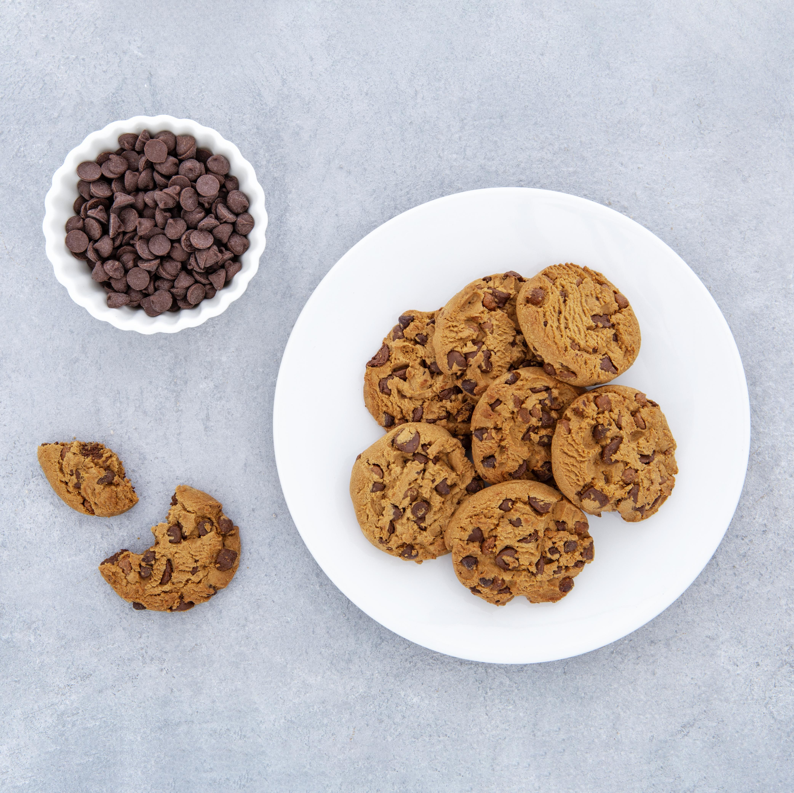

Chocolate Chip Cookies
Description
These classic chocolate chip cookies are soft, chewy, and loaded with chocolate chips. Perfect for any occasion!
Ingredients
- 2 cups all-purpose flour
- 1/2 teaspoon baking soda
- 1/2 teaspoon salt
- 3/4 cup unsalted butter, melted
- 1/2 cup white sugar
- 1 large egg
- 1 egg yolk
- 1 teaspoon vanilla extract
- 2 cups semisweet chocolate chips
Steps
- Preheat your oven to 165°C (325°F).
- Grease cookie sheets or line with parchment paper.
- In a bowl, sift together the flour, baking soda, and salt. Set aside.
- In another bowl, beat the melted butter with white and brown sugar until smooth.
- Beat in the egg, egg yolk, and vanilla extract to the butter mixture until light and creamy.
- Gradually add the dry ingredients to the wet ingredients and stir until combined.
- Fold in the chocolate chips.
- Drop spoonfuls of dough 3 inches apart onto the baking sheets.
- Bake for 15-17 minutes or until edges are lightly golden.
- Let cool on the baking sheet for a few minutes before transferring to a wire rack.